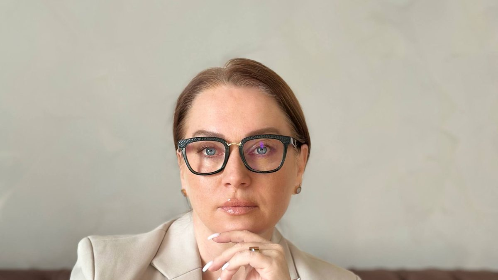
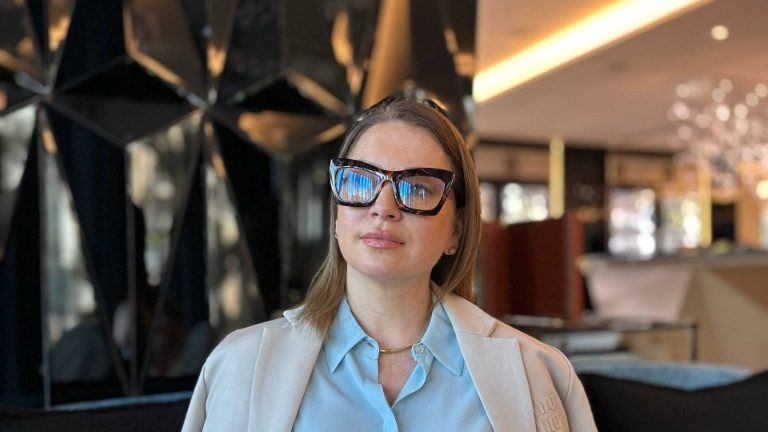
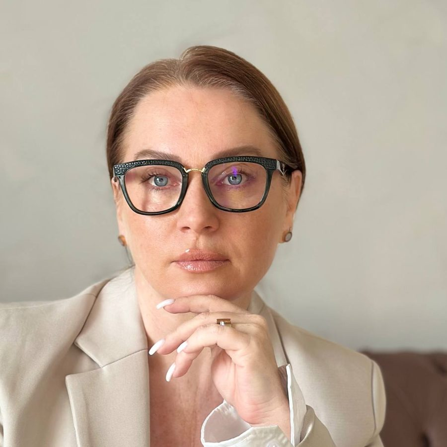

В 2013 году Лена Аронов потеряла почти всё. То, что помогло ей подняться, сегодня возвращает силы руководителям
Как из самого тяжёлого года её жизни родился метод «4 Опоры» и почему с ним приходят собственники и руководители компаний
Neuroscience-coach, основатель Diamond Generation

Лена Аронов всегда доверяла тому, что можно измерить и проверить.
За плечами — психология и докторская степень в нейронауке, научная работа в Алматы под руководством профессора Г. А. Усманова. Потом Фонд Сороса, где она отвечала за Центральную Азию. Собственная консалтинговая компания в США. И девять лет на посту регионального директора Института Адизеса, рядом с самим Ицхаком Адизесом.
Модели, цифры, управленческие системы — её привычный язык.
Среди её клиентов — собственники бизнеса, топ-менеджеры, государственные структуры. Люди, которые привыкли решать любые задачи головой.
И у многих из них Лена видела одно и то же.
Стратегия продумана, команда собрана, деньги есть. А сил нет. Отпуск не помогает. Сон не восстанавливает. В три часа ночи мысли идут по кругу.
Тогда она ещё не знала, что очень скоро окажется на их месте.
Банкротство и личный долг в два миллиона долларов. Потеря четырёх близких людей. Тяжёлый диагноз.
И всё это почти одновременно.
Методик Лена знала немало: психология, нейронаука, управленческие инструменты. Но каждая работала только с чем-то одним. Одна — с телом, другая — с мыслями, третья — с целями.
А рушилось всё сразу.
И Лена стала собирать себя заново. Она опиралась на всё, что знала: психологию, нейронауку, философию, методологию Адизеса и древнюю мудрость.
Шаг за шагом.

Всё держится на четырёх опорах
Тело. Ясная голова. Смысл. Близкие люди.
Лена поняла: человек держится на четырёх опорах. И чинить их по отдельности бесполезно.
Когда одна опора слабеет, её нагрузку берут на себя остальные. Какое-то время этого никто не замечает. Человек работает, принимает решения, держится. А потом вдруг уходят сон, радость, желание что-либо делать.
Хотя со стороны всё в порядке.
Так из личного опыта вырос метод «4 Опоры». Историю Лены опубликовал доктор Джо Диспенза.
Представьте стол на четырёх ножках. Если одна короче остальных, шатается весь стол. Можно подкладывать салфетки, переставлять вещи, укреплять столешницу.
А можно найти ту самую ножку.
Метод Лены не пытается переделать человека целиком. Сначала он показывает, какая из четырёх опор проседает первой. С неё и начинается работа.
Когда эта опора выравнивается, остальным становится легче.

Как помочь тем, у кого нет времени
Перед Леной встал вопрос.
У её клиентов нет месяца на ретрит и нет лишнего часа в неделю. Между встречами у них пятнадцать минут.
Как передать им то, что она сама собирала годами?
Лена начала с вопросов. Простых, но точных. За несколько минут они показывают, где у человека проседает опора:
- Как вы просыпаетесь?
- Кому вы можете позвонить в три часа ночи и сказать: «Мне плохо»?
- Если завтра всё, чего вы достигли, исчезнет, что у вас останется?
Для таких вопросов не нужны годы практики. Нужны только честные ответы.
Так и строится её работа: сначала увидеть, какая опора слабее остальных, затем понять, с чего начать.
Почему начинать нужно с одной опоры
Лене часто задают этот вопрос. Кажется логичным браться за всё сразу: и за сон, и за стресс, и за отношения.
Но так не получается. Если тело на пределе — сон по четыре часа, постоянное напряжение, — никакая работа с мыслями не закрепится. Голове не до нового: все силы уходят на то, чтобы держаться.
Если опереться не на кого, даже самая продуманная стратегия держится на одном человеке. И этот человек выдыхается.
Поэтому метод начинается с тела, а дальше идёт туда, где слабее всего именно у вас.
Четыре профиля
Из этой работы выросли четыре профиля. Каждый описывает человека, у которого первой проседает одна из опор.
Каждый из этих сценариев когда-то помогал справляться. Сегодня каждый из них незаметно забирает силы.
Свой подход Лена называет нейрокоучингом — на стыке нейронауки и древней мудрости.
Так появился тест «4 Опоры»
Лена не может встретиться с каждым лично. Поэтому она собрала свои вопросы в короткий тест.
Тест показывает, какая из четырёх опор проседает у вас сейчас. На него уйдёт около четырёх минут.
Сразу после теста вы получите свой профиль и план на 7 дней: по одной короткой практике для каждой опоры, а затем — для всех четырёх вместе. От пяти до двадцати минут в день, время вы выбираете сами.
Не нужно бороться с собой и перекраивать всю жизнь. Достаточно увидеть, на чём вы держитесь, и начать там, где тоньше всего.
Тест «4 Опоры» займёт около четырёх минут.
В нём нет вопросов про любимый цвет или поведение на вечеринках.
Это те же вопросы, которые Лена задаёт своим клиентам: про сон, мысли, смысл и близких людей.
Тест не ставит диагнозов. Он помогает назвать то, что вы, возможно, давно чувствуете, но не могли сформулировать.
Чтобы укрепить опору, сначала нужно понять, какая из них проседает.
Узнайте, какая опора держит вашу жизнь, а какая проседает
Программы Лены уже прошли более 2000 человек
Пройти тест бесплатно Результаты у всех разныеВажно: тест бесплатный. Профиль и план на 7 дней вы получите сразу после него.
Отзывы клиентов (3)
«Я семь лет была узким местом собственной компании и называла это ответственностью».
«Чек в закрытых сделках вырос в 5–10 раз при том же количестве встреч. Я просто перестал терять главное в разговоре».
«Через три недели я впервые за два года проснулся раньше будильника. Это мелочь, но она изменила всё остальное».
Истории клиентов Лены Аронов с сайта diamondgeneration.store. Результаты у всех разные.
Начните сегодня: тест и план на 7 дней бесплатно
Пройти тест «4 Опоры»Информация на этой странице не является медицинской консультацией и не заменяет обращения к специалисту.
Если вас беспокоит здоровье, обратитесь к врачу. Не откладывайте лечение из-за того, что прочитали здесь или по ссылкам с этой страницы. В экстренной ситуации сразу звоните врачу или в службу экстренной помощи.
© Diamond Generation · Лена Аронов, нейрокоуч